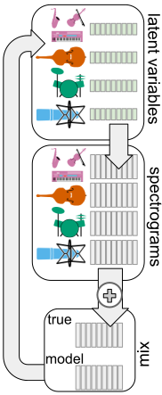
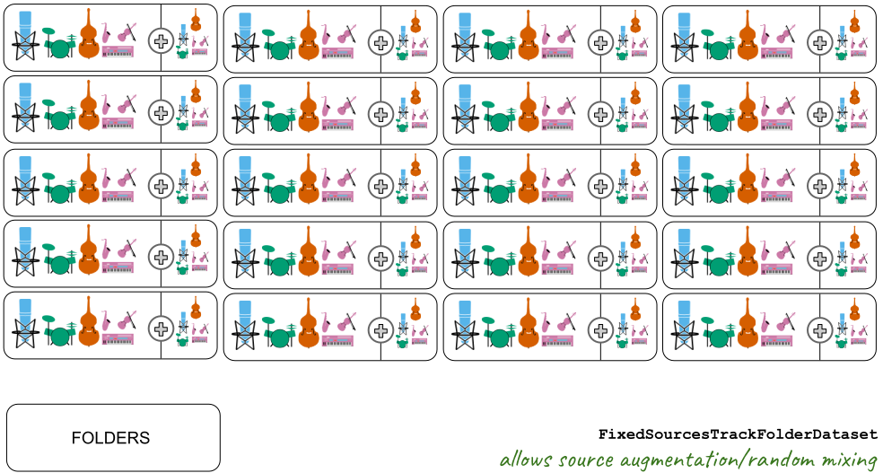
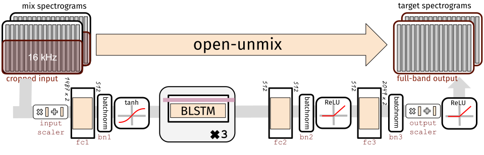
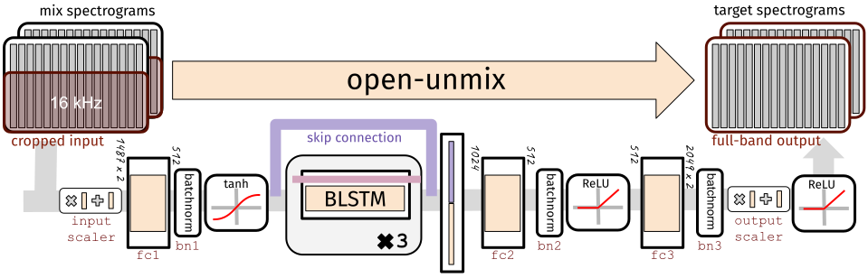

Deep learning for music separation
antoine.liutkus@inria.fr
fabian-robert.stoter@inria.fr
faroit
September 2nd, 2019

Music Unmixing/Separation


Applications

- Automatic Karaoke
- Creative Music Production
- Active listening
- Upmixing (stereo $\Rightarrow$ 5.1)
- Music Education
- Pre-processing for MIR
Unmatched state of the art
- Very active research community and evaluations
- International campaigns: MIREX, SiSEC
- Not-so-recent fact: separation with DNN works
- State of the art: SONY corporation systems
- S. Uhlich et al. "Deep neural network based instrument extraction from music." ICASSP 2015. $\Rightarrow$ Vocals SDR: 5dB (SiSEC 2016)
- S. Uhlich, et al. "Improving music source separation based on deep neural networks through data augmentation and network blending." ICASSP 2017. $\Rightarrow$ Vocals SDR: 5.9dB (SiSEC 2018)
- /MTG/DeepConvSep (349) 2.5 dB vocals SDR (SiSEC'16)
P. Chandna et al. "Monoaural audio source separation using deep convolutional neural networks", LVA-ICA, 2017.
- /f90/Wave-U-Net (309) 3.3 dB vocals SDR (SiSEC'18)
D. Stoller "Wave-u-net: A multi-scale neural network for end-to-end audio source separation." arXiv, 2018.
Motivations of this tutorial
Understand source separation
- Signal processing aspects
- Quick overview of the topic
- Discriminative and generative methods
Understand deep neural nets
- Fundamental models for static/temporal data
- A starter on training
- Models for audio
Python practice
- How to implement and train deep nets with Pytorch
- Official release of
open-unmixtoday! /sigsep/open-unmix-pytorch - MIT-licensed state of the art performance
All slides and material available at:
/sigsep
What open-unmix can achieve
Tutorial general outline
- Signal processing basics
- Evaluating source separation
- Datasets
- Hands on oracle separation
- A brief history of music separation
- A starter on deep neural networks
- Discriminative and generative separation
- Hands on using pre-trained
open-unmix - Training a DNN
- Audio datasets
- Hands on training on pytorch
- The
open-unmixstory - Testing tricks
- Hands on testing tricks with
open-unmix - Conclusion
Signal processing
Time-frequency representations
Mixture spectrogram
Vocals spectrogram
Drums spectrogram
Bass spectrogram
Spectral analysis as pre-whitening

- Frames too short: not diagonalized
- Frames too long: not stationary
Spectral analysis as pre-whitening

Filtering

Filtering

Filtering

Filtering

Filtering


Filtering

Evaluating quality

Perceptual evaluation: hot topics
- Which questions to ask ?
E. Cano et al. "The dimensions of perceptual quality of sound source separation." ICASSP, 2018.
- Referenceless evaluation
E. Grais et al. "Referenceless Performance Evaluation of Audio Source Separation using Deep Neural Networks." arXiv:1811.00454 (2018)
- Crowdsourced evaluations
M. Cartwright et al. "Crowdsourced Pairwise-Comparison for Source Separation Evaluation." ICASSP, 2018.
Objective evaluation
 BSSeval v3
BSSeval v3
All metrics in dB. The higher, the better:
- SDR: Source to distortion ratio. Error in the estimate.
- SIR: Source to interference ratio. Presence of other sources.
- SAR: Source to artifacts ratio. Amount of artificial noise.
E. Vincent et al. "Performance measurement in blind audio source separation." IEEE TASLP 14.4 (2006): 1462-1469.
 museval (BSSeval v4)
museval (BSSeval v4)
- Better matching filters computed track-wise
- Faster 10x
pip install museval, /sigsep/sigsep-mus-eval
F. Stöter et al. "The 2018 Signal Separation Evaluation Campaign." LVA/ICA 2018.
Oracle evaluation

Music separation datasets
| Name | Year | Reference | #Tracks | Tracks dur (s) | Full/stereo? | Total length |
|---|---|---|---|---|---|---|
| MASS | 2008 | (Vinyes) | 9 | (16 7) | ❌ / ✔️ | 2m24s |
| MIR-1K | 2010 | (Hsu and Jang) | 1,000 | 8 | ❌ / ❌ | 2h13m20s |
| QUASI | 2011 | (Liutkus et al.) | 5 | (206 21) | ✔️ / ✔️ | 17m10s |
| ccMixter | 2014 | (Liutkus et al) | 50 | (231 77) | ✔️ / ✔️ | 3h12m30s |
| MedleyDB | 2014 | (Bittner et al) | 63 | (206 121) | ✔️ / ✔️ | 3h36m18s |
| iKala | 2015 | (Chan et al) | 206 | 30 | ❌ / ❌ | 1h43m |
| DSD100 | 2015 | (Ono et al) | 100 | (251 60) | ✔️ / ✔️ | 6h58m20s |
| MUSDB18 | 2017 | (Rafii et al) | 150 | (236 95) | ✔️ / ✔️ | 9h50m |
The MUSDB18 dataset
- 100 train / 50 test full tracks
- Mastered with pro. digital audio workstations
- compressed STEMS (
MUSDB18) and uncompressed WAVMUSDB18-HQ - Parser and Evaluation tools in
- https://sigsep.github.io/datasets/musdb.html

Hands on oracle separation
Exploring MUSDB18
- Start the notebook session
- For one track, display waveforms, play some audio
- Display spectrogram of mixture
Oracle separation
- Get spectrograms of the sources
- Display the corresponding soft-mask for vocals
- Apply it on the mixture, reconstruct and listen to the result
Performance evaluation
- Loop over some musdb tracks
- Evaluate oracle separation system on musdb
- Compare to state of the art (SiSEC18)
A brief history of separation
The big picture

Rafii, Zafar, et al. "An Overview of Lead and Accompaniment Separation in Music." IEEE/ACM TASLP 26.8 (2018): 1307-1335.
A brief history: model-driven methods
Harmonicity for the lead

- Pitch detection
- Clean voices
- "Metallic" artifacts
A brief history: model-driven methods
Redundancy for the accompaniment: NMF

- Spectral templates
- Low-rank assumptions
- Bad generalization
A brief history: model-driven methods
Redundancy for the accompaniment: RPCA

- Low-rank for music
- Vocals as unstructured
- Strong interferences in general
A brief history: model-driven methods
Redundancy for the accompaniment: REPET

- Repetitive music
- Non-repetitive vocals
- Solos in vocals
A brief history: model-driven methods
Modeling both lead and accompaniment: source filter

- Harmonic vocals
- Low-rank music
- Poor generalization
A brief history: model-driven methods

Cascaded methods
- Combining methods
- Handcrafted systems
- Poor generalization
A brief history: model-driven methods
Fusion of methods

- Combining in a data-driven way
- Doing best than all
- Computationally demanding
A starter on deep neural networks
Y. LeCun, et al. "Deep learning". nature, 521(7553), 436 (2015).
Static data
The basic fully connected layer


Static data
Basic fully connected network

Static data
A usual deep network

- Cascading linear and non-linear operations augments expressive power
- 7 millions parameters in our case
Temporal data
colah's blog, Understanding LSTM Networks, 2015.
Temporal data
From fully connected to the simple recurrent net

Temporal data
From fully connected to the simple recurrent net

Temporal data
From fully connected to the simple recurrent net

Temporal data
From fully connected to the simple recurrent net

Temporal data
The simple recurrent net

- $y_{t}=f\left(linear\left\{ x_{t},y_{t-1}\right\} \right)$
- Similar to a Markov model
- Exponential decay of information
- Vanishing or exploding gradient for training
- Limited for long-term dependencies
P. Huang, et al. "Deep learning for monaural speech separation". (2014) ICASSP.
Temporal data
The long short term memory (LSTM)

Temporal data
The long short term memory (LSTM)

Temporal data
The long short term memory (LSTM)

Temporal data
The bi-LSTM

- LSTM are causal systems
- Predicts future from past
Temporal data
The bi-LSTM

- We can use anti-causal LSTM
- Different predictions!
Temporal data
The bi-LSTM

- Independent forward and backward
- Outputs can be concatenated
- Outputs can be summed

Discriminative source separation: one source


- Directly get source from mixture
- Straightforward inference
- Trained on paired mixtures/sources
Discriminative source separation: all sources

S. Uhlich, et al. "Improving music source separation based on deep neural networks through data augmentation and network blending." (2017) ICASSP.
Generative source separation

- The model can transform random noise to realistic spectrograms
- Training is done on sources only, without mixtures
Inference for generative separation

- Testing requires inference of the latent variables ("noise")
Inference for generative separation: recent pointers
- Rejection sampling with Variational autoencoders
- S. Leglaive et al. "A variance modeling framework based on variational autoencoders for speech enhancement" MLSP, 2018.
- Y. Bando et al. "Statistical speech enhancement based on probabilistic integration of variational autoencoder and non-negative matrix factorization", ICASSP 2018
- Rejection sampling with GANs
- Y. Subakan et al. "Generative adversarial source separation", ICASSP 2018.
- Inference with encoder networks
- M. Pariente et al. "A statistically principled and computationally efficient approach to speech enhancement using variational autoencoders" arXiv, 2019.

Hands on using pre-trained open-unmix
- Load the pre-trained
open-unmix - Separate on MUSDB7 track
- Compute scores and compare with oracle
Training a DNN
- Vocabulary
- Gradient descent
- Discriminative training
- Generative training
Vocabulary

Vocabulary

Vocabulary

Vocabulary

Gradient descent

- $loss\leftarrow \sum_{(x,y)\in batch}cost\left(y_\Theta\left(x\right), y\right)$
- Update $\Theta$ to reduce the loss!
- We can compute $\frac{\partial loss}{\partial\Theta_{i}}$ for any parameter $\Theta_i$
- "The influence of $\Theta_i$ on the error"
- It's the gradient
- Computed through backpropagation
- A simple optimization: $\Theta_i\leftarrow \Theta_i - \lambda \frac{\partial loss}{\partial\Theta_{i}}$
- It's the stochastic gradient descent
- $\lambda$ is the learning rate
- Batching is important
There are many other optimization algorithms...
Gradient descent
Learning rate wisdom


Leonardo Araujo dos Santos, Artificial Intelligence, 2017.
Gradient descent
Regularization with dropout

- Parts of the net randomly set to 0
- No unit should be critical: regularization
- Probabilistic interpretation
N Srivastava, et al. "Dropout: a simple way to prevent neural networks from overfitting". JMLR. (2014) 15(1), 1929-1958.
Gradient descent
Data augmentation
- Artificially increase the size of the dataset
- An active research topic in audio
- S. Uhlich, et al. "Improving music source separation based on deep neural networks through data augmentation and network blending." (2017) ICASSP
- A. Cohen-Hadria, et al. "Improving singing voice separation using Deep U-Net and Wave-U-Net with data augmentation."" arXiv 2019.
- Some simple ideas: random excerpts, random sources gains


Discriminative training

Discriminative training, computing the loss

Discriminative training, computing the loss

Discriminative training, computing the loss

Discriminative training: the audio data-fit loss jungle
 $loss=\sum_{b\in batch, f,t} d\left(Y_b\left(f,t\right),\hat{Y}_b\left(f,t\right)\right)$
$loss=\sum_{b\in batch, f,t} d\left(Y_b\left(f,t\right),\hat{Y}_b\left(f,t\right)\right)$

- Wide variety of loss functions $d\left(a,b\right)$
- squared loss $\left|a-b\right|^2$
- absolute loss $\left|a-b\right|$
- Kullback Leibler loss $a\log\frac{a}{b}-a+b$
- Itakura Saito loss $\frac{a}{b}-\log\frac{a}{b}-1$
- Cauchy, alpha divergence, ...
- Applied on $Y$, $Y^2$, any $Y^\alpha$, $\log Y$, ...
- Theoretical groundings for all
C. Févotte, et al. "Algorithms for nonnegative matrix factorization with the β-divergence." Neural computation 23.9 (2011): 2421-2456.
A. Liutkus, et al. "Generalized Wiener filtering with fractional power spectrograms." (2015) ICASSP.
Discriminative training: the audio data-fit loss jungle


A. Nugraha, et al. "Multichannel Audio Source Separation With Deep Neural Networks." TASLP 24.9 (2016): 1652-1664.
Generative training: Generative Adversarial Networks
Y. Subakan et al. "Generative adversarial source separation", ICASSP 2018.

Generative training: Variational Auto-Encoders
S. Leglaive et al. "A variance modeling framework based on variational autoencoders for speech enhancement" MLSP, 2018.

Audio datasets in open-unmix
Paired sampling: AlignedDataset

Audio datasets in open-unmix
Unpaired sampling: SourceFolderDataset

Audio datasets in open-unmix
Paired/Unpaired sampling: FixedSourcesTrackFolderDataset
Audio datasets in open-unmix
Paired sampling: VariableSourcesTrackFolderDataset

Hands-on training a discriminative model using pytorch
Data
- Create a simple MUSDB18 dataset, examples of samples
- Compute statistics for scaler
- Create the sampler
Model
- Create a model, an optimizer
Training loop
- Compute loss
- Back-propagation + gradient descent
UMX training tricks /sigsep/open-unmix-pytorch/train.py
- Learning-rate schedulers
- Early stopping
Adapt to a SourceFolderDataset
The open-unmix (UMX) story

The open-unmix (UMX) story

The open-unmix (UMX) story

- Input and output scaling are good for training
S. Uhlich et al. "Deep neural network based instrument extraction from music." ICASSP 2015.
The open-unmix (UMX) story

- Skip-connections do not increase expressive power, but good impact on training
R. Gribonval et al. "Approximation spaces of deep neural networks." arXiv 2019.
The open-unmix (UMX) story

- Instance normalization removes dependency on mixture scale
$\Rightarrow$ It makes the model insensitive to mixture scale
- This is our ISMIR'18 version
Training the ISMIR'18 version


- Training goes well, no overfit
- Good performance: 5.8 dB vocals SDR on MUSDB18
- But scale of source is wrong!
$\Rightarrow$ Problematic for spectral subtraction, direct synthesis...
The open-unmix (UMX) story
- Let's replace instance normalization by a classical batch normalization
The open-unmix (UMX) story

Use the model to predict a filter on the mixture!
The open-unmix (UMX) story

- The model now learns how to mask the mixture
$\Rightarrow$ Sources scales should be good$\Rightarrow$ Loss computed on spectrograms, not masks
Training the final version


- Training goes wrong, strong overfit
- Performance drop of ~2 dB !!
What happened?!

- Masking version:
- But
instancenormwas working!
Training set too easy to remember?
It was making the true source unreachable!
$\Rightarrow$ Preventing overfitting

Fighting overfitting
Before:
Fighting overfitting
After:

- Random excerpts, higher patience
- Fixed learning rate decay (120 epochs)
$\Rightarrow$ Back to 5.6 dB
Final tuning

- Random sources gains, random stereo swapping
- Take sources from random tracks
- Add weight decay
- Increase dropout rate
- Learning rate decay on plateau ($\times 0.1$)
- Select the best of several seeds
open-unmix: final model (UMX)

$\Rightarrow$ Reach 6.3 dB vocals SDR on MUSDB18
Spoiler: final model with much more data (UMXpro)

$\Rightarrow$ Reach 7.5 dB vocals SDR on MUSDB18
Outline
Testing
- Representation
- Mono filter tricks
- Multichannel Gaussian model
- The multichannel Wiener filter
Testing: representations

- The first source of poor results: inverse STFT!
- Verify perfect reconstruction
- Better: use established libraries, like
librosa,scipy...
Testing: mono filter tricks
Logit filters

- If the mask is 0.8... just put 1
- If the mask is 0.2... just put 0
- Cheap interference reduction
Multichannel Gaussian model

Multichannel Gaussian model

Multichannel Gaussian model

Multichannel Gaussian model

Multichannel Gaussian model

Multichannel Gaussian model

Multichannel Gaussian model

Multichannel Gaussian model

Multichannel Gaussian model

Multichannel Gaussian model

Multichannel Gaussian model

Testing: the multichannel Wiener filter

- Sources and mixtures are jointly Gaussian
- We observe the mix, what can we say about the sources?
Testing: the multichannel Wiener filter

Testing: the multichannel Wiener filter

Testing: the multichannel Wiener filter

Testing: the multichannel Wiener filter

Testing: the multichannel Wiener filter

Testing: the multichannel Wiener filter

Testing: the Expectation-Maximization algorithm

The norbert package

Installation
- /sigsep/norbert
pip install norbert
Usage
- Easy computation of soft masks
- Easy computation of optimal (stereo) Wiener filters
- Expectation-maximization algorithm
- Spectral subtraction
norbert.softmask(v, x, logit=None, eps=None) norbert.wiener(v, x, iterations=1, use_softmask=True, eps=None) norbert.expectation_maximization(y, x, iterations=2, verbose=0, eps=None) norbert.contrib.residual_model(v, x, alpha=1)
Hands on: inference with open-unmix
open.unmix.app
- Running MUSDB18 separation
- Tuning test-time parameters
Conclusion
Conclusion: the open source unmix
F. Stöter et al, "Open-Unmix - A reference implementation for audio source separation", JOSS 2019.

Conclusion: the open source unmix
F. Stöter et al, "Open-Unmix - A reference implementation for audio source separation", JOSS 2019.

- State of the art performance
- Close to binary oracles!
- /sigsep/open-unmix-pytorch
$\Rightarrow$ 6.3 dB vocals SDR

Conclusion: what was kept out
Exotic representations
- Scattering transforms, wavelets, etc.
- End-to-end separation: wavenet, etc.
wave-U-net: 3.3 dB vocals SDR
Alternative structures
- The convolutional neural network (CNN)
- The U-NET
- The MM-densenet
Deep clustering strategy
$\Rightarrow$ Useful for separating sources of same type (e.g. voice & voice)
$\Rightarrow$ Not so common in music
Advanced data augmentation
Conclusion: what is promising
Scale
- More data helps immensely
- Evaluate scalability of an idea / a model
Hot topics
- Structures with more parameters work better...
- Better signal processing helps
- Generative ideas, even if lagging behind in performance
Engineering
- We got 3dB SDR improvement with no publishable contribution
- Real-time / frontend separation
$\Rightarrow$ evaluating the real impact of a contribution is difficult
Conclusion: advertising UMX-Pro
Conclusion: ending remarks
- Convergence of signal processing, probability theory and DL
- Learning with limited amount of data
- Model long term dependency
- Representation learning for sound and music
- Exploiting knowledge domain, user interaction
- Unsupervised learning ?
Resources
- References and Software tools: sigsep.github.io
- Open-unmix website: open.unmix.app
Reference
F. Stöter et al, "Open-Unmix - A reference implementation for audio source separation", JOSS 2019.

Deep Learning for Music Unmixing